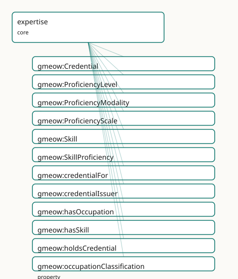

GMEOW Expertise Module
- IRI: https://blackcatinformatics.ca/gmeow/slices/expertise
- Tier: core
Group: core
What This Slice Covers
This slice owns 17 terms and contributes 23 mapping or projection rows. Use it when its terms match the native fact you want to preserve; use the linkage tables to see how those facts leave GMEOW for consumer vocabularies.
Dependencies
Consumers
- Cross-cutting proficiency claims (promoted core): skills, credentials, language proficiency.
Local Map

Terms
Classes
| Term | Label | Definition |
|---|---|---|
gmeow:Credential |
Credential | An educational or occupational credential held by an agent — a degree, certification, badge, license, or other attestation of qualification. Its issuer is gmeo... |
gmeow:ProficiencyLevel |
Proficiency Level | An attained proficiency level on a scale (CEFR A1–C2; Dreyfus novice→expert; NIH beginner→expert; assessed; native; heritage). A value carried by gmeow:profici... |
gmeow:ProficiencyModality |
Proficiency Modality | The skill channel a language proficiency rates (speaking, listening, reading, writing, signing, comprehension, overall). A value carried by gmeow:proficiencyMo... |
gmeow:ProficiencyScale |
Proficiency Scale | A framework for rating proficiency — language, skill, or any competency domain (CEFR, ILR, ACTFL, Dreyfus, NIH, assessed, self-reported). A value carried by gm... |
gmeow:Skill |
Skill | A competency or ability an agent possesses — a knowledge, ability, or expertise that can be applied to perform a task. Occupation-independent; aligned to esco:... |
gmeow:SkillProficiency |
Skill Proficiency | A reified, leveled proficiency of an agent in a skill — the gufo:Relator binding {agent} × {skill} × {level on a scale} × {interval}, mirroring languages' gmeo... |
Properties
| Term | Label | Definition |
|---|---|---|
gmeow:credentialFor |
credential for | The skill or occupation that a credential certifies. Non-functional — a credential may certify several skills or both a skill and an occupation. Profile compli... |
gmeow:credentialIssuer |
credential issuer | The organization that issued a credential. Functional per credential: one issuer is constitutive of the credential's identity (a different issuer is a differen... |
gmeow:hasOccupation |
has occupation | Relates a person to an occupation they hold or have held. Non-functional — a person may have several occupations over time. |
gmeow:hasSkill |
has skill | Relates an agent to a skill it possesses. Non-functional — an agent may have many skills. The leveled, scaled detail is carried by the reified gmeow:SkillProfi... |
gmeow:holdsCredential |
holds credential | Relates an agent to a credential it holds. Non-functional — an agent may hold many credentials, and a single credential may be held by many agents (shared lice... |
gmeow:occupationClassification |
occupation classification | An external classification code for an occupation (ESCO, SOC, O*NET, ISCO, NOC). Non-functional — an occupation may carry codes from several schemes. The schem... |
gmeow:skillProficiencyAgent |
skill proficiency agent | The agent whose proficiency a skill-proficiency expresses. Functional — constitutive of the proficiency. |
gmeow:skillProficiencyInterval |
skill proficiency interval | The interval over which a skill-proficiency held (proficiency changes over a life). Lighter cases use gmeow:validFrom/validUntil on the statement. |
gmeow:skillProficiencyLevel |
skill proficiency level | The attained level of a skill-proficiency (a gmeow:ProficiencyLevel value, e.g. dreyfusExpert, assessedCompetent). Functional. |
gmeow:skillProficiencyOf |
skill proficiency of | The skill a skill-proficiency concerns. Functional — constitutive. |
gmeow:skillProficiencyScale |
skill proficiency scale | The framework/scale a skill-proficiency level is measured on (Dreyfus, NIH, assessed, self-reported) — a gmeow:ProficiencyScale value. Functional. |
Linkages
- Rows: 23
- Projection profiles:
schema-org - External vocabularies:
ceterms,esco,schema,wd
| Source | Kind | Profile | Predicate/Relation | Target | Evidence |
|---|---|---|---|---|---|
gmeow:Credential |
equivalence | - |
owl:equivalentClass | ceterms:Credential | gmeow-classes.sssom.tsv; gmeow:eqClasses054; confidence 0.9 |
gmeow:Credential |
equivalence | - |
owl:equivalentClass | schema:EducationalOccupationalCredential | gmeow-classes.sssom.tsv; gmeow:eqClasses044; confidence 1 |
gmeow:Credential |
equivalence | - |
skos:closeMatch | wd:Q5158833 | gmeow-wikidata.sssom.tsv; gmeow:eqWikidata046; confidence 0.8 |
gmeow:Skill |
equivalence | - |
skos:closeMatch | esco:Skill | gmeow-classes.sssom.tsv; gmeow:eqClasses052; confidence 0.9 |
gmeow:Skill |
equivalence | - |
skos:closeMatch | wd:Q2242730 | gmeow-wikidata.sssom.tsv; gmeow:eqWikidata052; confidence 0.8 |
gmeow:credentialFor |
equivalence | - |
skos:closeMatch | schema:competencyRequired | gmeow-properties.sssom.tsv; gmeow:eqProperties071; confidence 0.8 |
gmeow:credentialIssuer |
equivalence | - |
skos:closeMatch | ceterms:ownedBy | gmeow-properties.sssom.tsv; gmeow:eqProperties074; confidence 0.8 |
gmeow:credentialIssuer |
equivalence | - |
skos:closeMatch | schema:recognizedBy | gmeow-properties.sssom.tsv; gmeow:eqProperties072; confidence 0.8 |
gmeow:credentialIssuer |
equivalence | - |
skos:closeMatch | schema:sourceOrganization | gmeow-properties.sssom.tsv; gmeow:eqProperties073; confidence 0.8 |
gmeow:hasOccupation |
equivalence | - |
owl:equivalentProperty | schema:hasOccupation | gmeow-properties.sssom.tsv; gmeow:eqProperties033; confidence 1 |
gmeow:hasSkill |
equivalence | - |
skos:closeMatch | schema:knowsAbout | gmeow-properties.sssom.tsv; gmeow:eqProperties069; confidence 0.7 |
gmeow:hasSkill |
equivalence | - |
skos:closeMatch | schema:skills | gmeow-properties.sssom.tsv; gmeow:eqProperties068; confidence 0.8 |
gmeow:holdsCredential |
equivalence | - |
owl:equivalentProperty | schema:hasCredential | gmeow-properties.sssom.tsv; gmeow:eqProperties070; confidence 1 |
gmeow:Credential |
projection | schema-org |
projects to / <= | schema:competencyRequired | gmeow:mapSchemaCredentialFor; confidence 0.8; lossy: the Skill/Occupation distinction in credentialFor collapses to schema:competencyRequired |
gmeow:Credential |
projection | schema-org |
projects to / <= | schema:recognizedBy | gmeow:mapSchemaCredentialIssuer; confidence 0.8; lossy: the issuer organization relator collapses to a flat schema:recognizedBy edge |
gmeow:SkillProficiency |
projection | schema-org |
projects to / <= | schema:knowsAbout | gmeow:mapSchemaSkillProficiency; confidence 0.8; lossy: the SkillProficiency relator (level, scale, interval, standpoint, confidence) collapses to a flat schema:knowsAbout edge; transform gmeow:fnSkillProficiencyToKnowsAbout |
gmeow:credentialFor |
projection | schema-org |
projects to / <= | schema:competencyRequired | gmeow:mapSchemaCredentialFor; confidence 0.8; lossy: the Skill/Occupation distinction in credentialFor collapses to schema:competencyRequired |
gmeow:credentialIssuer |
projection | schema-org |
projects to / <= | schema:recognizedBy | gmeow:mapSchemaCredentialIssuer; confidence 0.8; lossy: the issuer organization relator collapses to a flat schema:recognizedBy edge |
gmeow:hasSkill |
projection | schema-org |
projects to / <= | schema:knowsAbout | gmeow:mapSchemaSkillProficiency; confidence 0.8; lossy: the SkillProficiency relator (level, scale, interval, standpoint, confidence) collapses to a flat schema:knowsAbout edge; transform gmeow:fnSkillProficiencyToKnowsAbout |
gmeow:hasSkill |
projection | schema-org |
projects to / = | schema:skills | gmeow:mapSchemaSkills; confidence 0.9 |
gmeow:holdsCredential |
projection | schema-org |
projects to / = | schema:hasCredential | gmeow:mapSchemaHasCredential; confidence 0.9 |
gmeow:skillProficiencyAgent |
projection | schema-org |
projects to / <= | schema:knowsAbout | gmeow:mapSchemaSkillProficiency; confidence 0.8; lossy: the SkillProficiency relator (level, scale, interval, standpoint, confidence) collapses to a flat schema:knowsAbout edge; transform gmeow:fnSkillProficiencyToKnowsAbout |
gmeow:skillProficiencyOf |
projection | schema-org |
projects to / <= | schema:knowsAbout | gmeow:mapSchemaSkillProficiency; confidence 0.8; lossy: the SkillProficiency relator (level, scale, interval, standpoint, confidence) collapses to a flat schema:knowsAbout edge; transform gmeow:fnSkillProficiencyToKnowsAbout |
Guide
Expertise mapping doctrine
This note records the design contract for the GMEOW expertise module
(ontology/modules/expertise.ttl) and its relationship to the language
proficiency machinery, employment, attestation, and surface vocabularies.
Core model
Skill,Occupation, andCredentialaregufo:Kindindividuals.SkillProficiencyis agufo:Relatorbinding{agent} × {skill} × {level} × {scale} × {interval}.gmeow:hasSkillis the flat shortcut for the common case; promote toSkillProficiencywhen level, scale, temporal scope, provenance, or standpoint matter.
Reuse, not parallel mechanisms
- The rating vocabulary (
ProficiencyScale,ProficiencyLevel) lives inlanguages.ttland is domain-neutral. CEFR/ILR/ACTFL remain language scales; Dreyfus/NIH/Assessed are skill scales.LanguageProficiencyconsumes the same value individuals unchanged. - Temporal scope reuses
validFrom/validUntil(lightweight) andTimeInterval/hasCreationEvent(heavyweight) fromtemporal.ttlandlifecycle.ttl. Standpointand confidence reuse the cross-cuttingaccordingTo/confidenceannotation properties fromstandpoint.ttl.
Endorsement and credential verification
- A third-party skill endorsement is an
AttestationwhoseattestedSubjectis theSkillProficiency. - Self-asserted, assessed, and endorsed proficiency levels coexist as standpoint-indexed claims (CONSTITUTION Principle 9); none is privileged.
Credentialverification is routed throughattestation.ttl, which is already aligned tovc:VerifiableCredential. A verifiable credential is aCredentialwhose authenticity is borne by anAttestation. The expertise module supplies content; attestation supplies the signed envelope.
Occupation classification
occupationClassificationcarries ESCO, SOC, O*NET, ISCO, or NOC codes as literal values.- Classification resolution and scheme identification are solver-side concerns (CONSTITUTION Principle 12); the ontology only records the code.
Surface-vocabulary bridging (by reference)
- schema.org —
Skill/SkillProficiencyflatten toschema:knowsAbout/schema:skills;holdsCredentialmaps toschema:hasCredential;credentialFortoschema:competencyRequired;credentialIssuertoschema:recognizedBy/schema:sourceOrganization. - ESCO —
Skill→esco:Skill;Occupation→esco:Occupation. - CTDL /
CredentialEngine —Credential→ceterms:Credential;credentialIssuer→ceterms:ownedBy. - Open Badges 3.0 / W3C VC — no new terms in the expertise module; verification semantics are inherited from the attestation layer.
SHACL
shapes/expertise-shapes.ttlenforces closed-world well-formedness:- A
SkillProficiencymust reference exactly oneSkilland carry exactly oneProficiencyLevel. - The level's
levelScaleshould match the relator'sskillProficiencyScale(warning). - A
Credentialintended to be verifiable should reference anAttestation(warning). - A
Credential's issuer must be anOrganization.